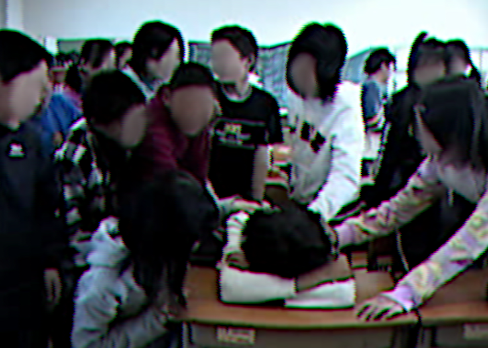
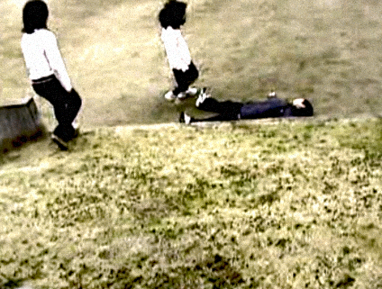

いじめ防止の取組について
許さない許さない許さない許さない許さない許さない許さない許さない許さない
いじめは人権をふみにじる行為であり、絶対に許されるものではありません。
藤が峰小学校は、生徒によるいじめを断じて許しません！！！
許さない許さない許さない許さない許さない許さない許さない許さない許さない許さない許さない許さない
繰り返さない繰り返さない繰り返さないもう繰り返さない繰り返さない繰り返さない繰り返さない繰り返さない繰り返さない繰り返さない
～いじめ防止宣言 ３箇条～
・お互いを尊重する
・いじめを見て見ぬふりしない
・いじめをする人間を決して許さない
繰り返さない繰り返さない繰り返さないもう繰り返さない繰り返さない繰り返さない繰り返さない繰り返さない繰り返さない繰り返さない
いじめをみかけたら必ず先生に連絡しましょう
許すな

過ちを繰り返すな
こうなってからでは遅い